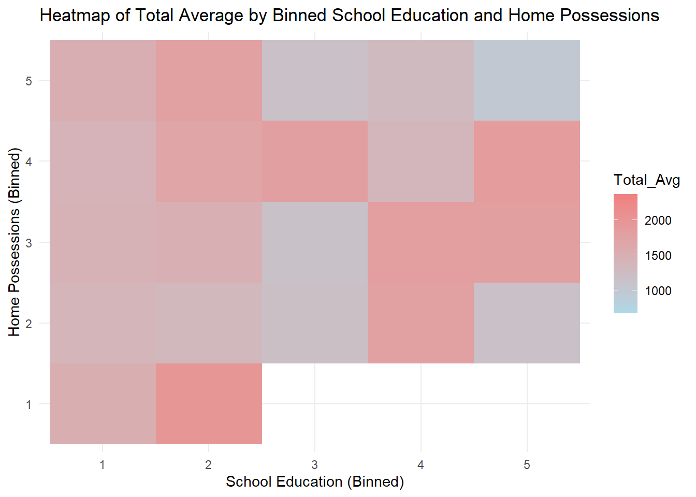
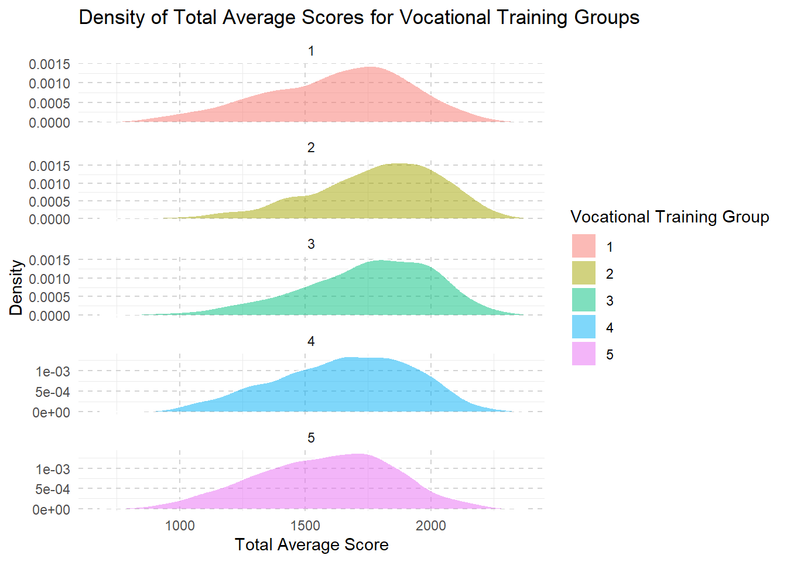

pacman::p_load(ggrepel, ggthemes, hrbrthemes, patchwork, tidyverse, haven, gridExtra, ggplot2, plotly, ggridges)Take-home Exercise 1: Creating data visualisation beyond default
1 Overview
1.1 Introduction
Despite claims of educational excellence in Singapore, skepticism persists, particularly regarding disparities in elite and neighborhood schools and socioeconomic factors. Leveraging 2022 PISA data, this project aims for a succinct Exploratory Data Analysis (EDA) using ggplot2 to reveal performance distribution and explore relationships with schools, gender, and socioeconomic status.
1.2 Objectives
Distribution Analysis: Use EDA methods and ggplot2 to visualize math, reading, and science performance distribution; Provide insights into score spread, addressing disparities.
Relationship Exploration: Investigate academic performance relationships with school types using concise boxplots; Analyze gender-based differences with brief boxplots; Examine socioeconomic impact on academic outcomes, identifying correlations using boxplots.
Limitations and Focus: Utilize up to five EDA visualizations for clarity; Deliver actionable insights for policymakers based on identified patterns.
2 Data Preparation
2.1 Loading R packages
The code chunk below uses pacman::p_load() to check if packages are installed. If they are, they will be launched into R. The packages installed are
ggrepel: an R package provides geoms for ggplot2 to repel overlapping text labels.
ggthemes: an R package provides some extra themes, geoms, and scales for ‘ggplot2’.
hrbrthemes: an R package provides typography-centric themes and theme components for ggplot2.
patchwork: an R package for preparing composite figure created using ggplot2.
haven: an R package designed for reading and writing datasets from software like SAS, SPSS, and Stata, into R.
gridExtra: an R package that extends the grid graphics system.
ggplot2: a widely used R package for creating elegant and informative graphics using the Grammar of Graphics framework.
plotly: an R package for interactive, web-based charts and dashboards, extending ggplot2 capabilities.
ggridges: an R package extending ggplot2 for concise and effective ridge plots.
2.2 Dataset
One dataset (Student questionnaire data file) from PISA is provided for the task.
stu_qqq <- read_sas("../../data/cy08msp_stu_qqq.sas7bdat")2.2.1 Data Filtering and Transformation
- Filter SGP students record
stu_qqq_SG <- stu_qqq %>%
filter(CNT == "SGP")- Create new dataset including student’ performance in mathematics, reading, and science and relevant record of their schools, gender and socioeconomic status
Click to view the code.
mathematics <- stu_qqq_SG[, c("PV1MATH", "PV2MATH", "PV3MATH", "PV4MATH", "PV5MATH", "PV6MATH", "PV7MATH", "PV8MATH", "PV9MATH", "PV10MATH")]
reading <- stu_qqq_SG[, c("PV1READ", "PV2READ", "PV3READ", "PV4READ", "PV5READ", "PV6READ", "PV7READ", "PV8READ", "PV9READ", "PV10READ")]
science <- stu_qqq_SG[, c("PV1SCIE", "PV2SCIE", "PV3SCIE", "PV4SCIE", "PV5SCIE", "PV6SCIE", "PV7SCIE", "PV8SCIE", "PV9SCIE", "PV10SCIE")]
school <- stu_qqq_SG[, c("CNTSCHID")]
gender <- stu_qqq_SG[, c("ST004D01T")]
school_education <- stu_qqq_SG[, grep("ST005|ST007", names(stu_qqq_SG), value = TRUE)]
vocational_training <- stu_qqq_SG[, grep("ST006|ST008", names(stu_qqq_SG), value = TRUE)]
home_possessions <- stu_qqq_SG[, grep("ST250|ST251|ST253|ST254|ST255|ST256", names(stu_qqq_SG), value = TRUE)]2.2.2 Data Wrangling
2.2.2.1 Calculate the mean and median for maths, reading, and science
For mean values, use the rowMeans function to calculate the average score for each student.
For median values, use the apply function to compute the median along rows (students).
Then calculate the total sum of the average and the median scores for the three subjects for each student.
Click to view the code.
# Calculate mean values
Avg_Math <- rowMeans(mathematics, na.rm = TRUE)
Avg_Reading <- rowMeans(reading, na.rm = TRUE)
Avg_Science <- rowMeans(science, na.rm = TRUE)
# Calculate total sum of mean
Total_Avg <- rowSums(cbind(avg_math, avg_reading, avg_science), na.rm = TRUE)
# Calculate median values
Median_Math <- apply(mathematics, 1, median, na.rm = TRUE)
Median_Reading <- apply(reading, 1, median, na.rm = TRUE)
Median_Science <- apply(science, 1, median, na.rm = TRUE)
# Calculate total sum of mean
Total_Median <- rowSums(cbind(median_math, median_reading, median_science), na.rm = TRUE)2.2.2.2 Merge into a new table and save
Click to view the code.
# Create a new data frame
combined <- cbind(stu_qqq_SG["CNTSTUID"], Avg_Math, Avg_Reading, Avg_Science, Total_Avg, Median_Math, Median_Reading, Median_Science, Total_Median, school, gender, school_education, vocational_training, home_possessions)
colnames(combined)[colnames(combined) == "CNTSCHID"] <- "School"
colnames(combined)[colnames(combined) == "ST004D01T"] <- "Gender"
write_rds(combined,
"data/combined.rds")Read the combined data and check for missing values
Assigning names to variables
Click to view the code.
School <- combined$School
Gender <- combined$Gender
school_education <- combined[, grep("ST005|ST007", names(combined), value = TRUE)]
vocational_training <- combined[, grep("ST006|ST008", names(combined), value = TRUE)]
home_possessions <- combined[, grep("ST250|ST251|ST253|ST254|ST255|ST256", names(combined), value = TRUE)]2.2.2.3 Calculate the socioeconomic status
Use the rowSums function to calculate the sum of index of school education and vocational training for each students’ parents.
Click to view the code.
# Calculate sum values
sum_school_education <- rowSums(school_education, na.rm = TRUE)
sum_vocational_training <- rowSums(vocational_training, na.rm = TRUE)
# Calculate sum of home possessions
home_possessions <- home_possessions %>%
mutate(sum_home_possessions = rowSums(select(., starts_with("ST251Q"), -matches("ST251Q05JA|ST251Q08JA")), na.rm = TRUE))
sum_home_possessions <- home_possessions$sum_home_possessionsThen sum these aggregated values to calculate socioeconomic status for each student.
Combining scores from school education, vocational training, and home possessions to calculate a person’s overall socioeconomic status makes sense because socioeconomic status is complex and includes things like education, job skills, and how much someone owns. This method creates a single score that shows a person’s level of education, job abilities, and quality of living, all of which are important parts of their financial and social status.
Summation is straightforward and the results are easier to interpret. It can also handle zero values and matain scale consistency.
3 Exploratary Data Analysis
3.1 Histograms for Distribution of Scores in Each Subject
Click to view the code.
# Calculate the median and mean outside of the ggplot2 aes function
median_Avg_Math <- median(combined$Avg_Math, na.rm = TRUE)
mean_Avg_Math <- mean(combined$Avg_Math, na.rm = TRUE)
median_Avg_Reading <- median(combined$Avg_Reading, na.rm = TRUE)
mean_Avg_Reading <- mean(combined$Avg_Reading, na.rm = TRUE)
median_Avg_Science <- median(combined$Avg_Science, na.rm = TRUE)
mean_Avg_Science <- mean(combined$Avg_Science, na.rm = TRUE)
# Histogram for Avg_Math
p1 <- ggplot(combined, aes(x = Avg_Math)) +
geom_histogram(bins = 20, fill = "lightblue", color = "grey25") +
geom_vline(xintercept = median_Avg_Math, color = "blue", linetype = "dashed") +
geom_vline(xintercept = mean_Avg_Math, color = "red", linetype = "dashed") +
annotate("text", x = median_Avg_Math, y = Inf, label = paste("Median:", round(median_Avg_Math, 2)), vjust = 2, hjust = -1.1, color = "blue") +
annotate("text", x = mean_Avg_Math, y = Inf, label = paste("Mean:", round(mean_Avg_Math, 2)), vjust = 1, hjust = 1.5, color = "red") +
ggtitle("Histogram of Avg Math Scores") +
xlab("Average Math Score") +
ylab("count") +
theme_minimal()
p2 <- ggplot(combined, aes(x = Avg_Reading)) +
geom_histogram(bins = 20, fill = "lightgreen", color = "grey25") +
geom_vline(xintercept = median_Avg_Reading, color = "blue", linetype = "dashed") +
geom_vline(xintercept = mean_Avg_Reading, color = "red", linetype = "dashed") +
annotate("text", x = median_Avg_Reading, y = Inf, label = paste("Median:", round(median_Avg_Reading, 2)), vjust = 2, hjust = -1, color = "blue") +
annotate("text", x = mean_Avg_Reading, y = Inf, label = paste("Mean:", round(mean_Avg_Reading, 2)), vjust = 1, hjust = 1.5, color = "red") +
ggtitle("Histogram of Avg Reading Scores") +
xlab("Average Reading Score") +
ylab("count") +
theme_minimal()
p3 <- ggplot(combined, aes(x = Avg_Science)) +
geom_histogram(bins = 20, fill = "lightcoral", color = "grey25") +
geom_vline(xintercept = median_Avg_Science, color = "blue", linetype = "dashed") +
geom_vline(xintercept = mean_Avg_Science, color = "red", linetype = "dashed") +
annotate("text", x = median_Avg_Science, y = Inf, label = paste("Median:", round(median_Avg_Science, 2)), vjust = 2, hjust = -1, color = "blue") +
annotate("text", x = mean_Avg_Science, y = Inf, label = paste("Mean:", round(mean_Avg_Science, 2)), vjust = 1, hjust = 1.5, color = "red") +
ggtitle("Histogram of Avg Science Scores") +
xlab("Average Science Score") +
ylab("count") +
theme_minimal()
grid.arrange(p1, p2, p3, ncol = 1)Click to view the code.
ggplot(data = combined,
aes(x = Avg_Math)) +
geom_histogram(bins=20,
boundary = 100,
color="grey25",
fill="grey90") +
theme_gray() +
ggtitle("Distribution of Maths scores") Click to view the code.
ggplot(data=combined,
aes(x = Avg_Reading)) +
geom_histogram(bins=20,
boundary = 100,
color="grey25",
fill="grey90") +
theme_gray() +
ggtitle("Distribution of Reading scores") Click to view the code.
ggplot(data=combined,
aes(x = Avg_Science)) +
geom_histogram(bins=20,
boundary = 100,
color="grey25",
fill="grey90") +
theme_gray() +
ggtitle("Distribution of Science scores") Distributions for math, reading, and science are bit left-skewed. This may due to that the assessments is challenging and more students are scoring towards the lower end.
The closeness of means to median indicates that while distributions are skewed, extreme low scores are not predominant.
Score distributions are centrally peaked around 500-600. This indicates a standard performance level of the population.
We can further study the relationship between scores and some family economic status, gender, or schools.
3.2 Performance Comparison by Gender
‘1’ represents girls and ‘2’ represents boys in the ‘Gender’ column
Click to view the code.
combined$Gender <- factor(Gender, levels = c(1, 2), labels = c("Girl", "Boy"))
# Density plot for Mathematics
p1 <- ggplot(combined, aes(x = Avg_Math, fill = Gender)) +
geom_density(alpha = 0.5) +
ggtitle("Density Plot of Avg Math Scores by Gender") +
xlab("Average Math Score") +
ylab("Density") +
theme_minimal() +
scale_fill_manual(values = c("Girl" = "pink", "Boy" = "slateblue"))
# Density plot for Reading
p2 <- ggplot(combined, aes(x = Avg_Reading, fill = Gender)) +
geom_density(alpha = 0.5) +
ggtitle("Density Plot of Avg Reading Scores by Gender") +
xlab("Average Reading Score") +
ylab("Density") +
theme_minimal() +
scale_fill_manual(values = c("Girl" = "pink", "Boy" = "slateblue"))
# Density plot for Science
p3 <- ggplot(combined, aes(x = Avg_Science, fill = Gender)) +
geom_density(alpha = 0.5) +
ggtitle("Density Plot of Avg Science Scores by Gender") +
xlab("Average Science Score") +
ylab("Density") +
theme_minimal() +
scale_fill_manual(values = c("Girl" = "pink", "Boy" = "slateblue"))
# Combining the plots into one image for easy comparison
grid.arrange(p1, p2, p3, ncol = 1)Click to view the code.
ggplot(data = combined, aes(x = Avg_Math, color = Gender)) +
geom_line(stat = "density", size = 1, aes(y = after_stat(density)), alpha = 0.5) +
ggtitle("Distribution of Math Scores by Gender") +
xlab("Average Math Score") +
ylab("Density") +
theme_minimal() +
scale_color_manual(values = c("Girl" = "pink", "Boy" = "slateblue"))Click to view the code.
ggplot(data = combined, aes(x = Avg_Reading, color = Gender)) +
geom_line(stat = "density", size = 1, aes(y = after_stat(density)), alpha = 0.5) +
ggtitle("Distribution of Reading Scores by Gender") +
xlab("Average Reading Score") +
ylab("Density") +
theme_minimal() +
scale_color_manual(values = c("Girl" = "pink", "Boy" = "slateblue"))Click to view the code.
ggplot(data = combined, aes(x = Avg_Science, color = Gender)) +
geom_line(stat = "density", size = 1, aes(y = after_stat(density)), alpha = 0.5) +
ggtitle("Distribution of Science Scores by Gender") +
xlab("Average Science Score") +
ylab("Density") +
theme_minimal() +
scale_color_manual(values = c("Girl" = "pink", "Boy" = "slateblue"))In math and science, the peak of the boys’ density curve is slightly to the right of the girls’. This indicates that boys tend to have higher average scores in math and science.
For reading, the peak of the girls’ density curve is to the right of the boys’. This means that girls have better performance in reading compared with boys.
However, the curves overlap significantly across all subjects. This shows that the difference in gender is not so significant as expected.
The discovery conform to peoples common sense, although the difference in gender is not so large.
3.3 Performance Comparison by School
Click to view the code.
# Scatter plot for Avg Math Score vs School ID
p1 <- ggplot(combined, aes(x = School, y = Avg_Math)) +
geom_point(aes(color = School), alpha = 0.6) +
ggtitle("Scatter Plot of Avg Math Scores by School ID") +
xlab("School ID") +
ylab("Average Math Score") +
theme_minimal() +
theme(legend.position = "none")
# Scatter plot for Avg Reading Score vs School ID
p2 <- ggplot(combined, aes(x = School, y = Avg_Reading)) +
geom_point(aes(color = School), alpha = 0.6) +
ggtitle("Scatter Plot of Avg Reading Scores by School ID") +
xlab("School ID") +
ylab("Average Reading Score") +
theme_minimal() +
theme(legend.position = "none")
# Scatter plot for Avg Science Score vs School ID
p3 <- ggplot(combined, aes(x = School, y = Avg_Science)) +
geom_point(aes(color = School), alpha = 0.6) +
ggtitle("Scatter Plot of Avg Science Scores by School ID") +
xlab("School ID") +
ylab("Average Science Score") +
theme_minimal() +
theme(legend.position = "none")
# Plotting all three scatter plots in a grid for comparison
grid.arrange(p1, p2, p3, ncol = 1)
Click to view the code.
ggplot(data=combined, aes(x = School, y = Avg_Math)) +
geom_point(aes(color = School), alpha = 0.6) +
ggtitle("Scatter Plot of Avg Math Scores by School ID") +
xlab("School ID") +
ylab("Average Math Score") +
theme_minimal() +
theme(legend.position = "none")Click to view the code.
ggplot(data=combined, aes(x = School, y = Avg_Reading)) +
geom_point(aes(color = School), alpha = 0.6) +
ggtitle("Scatter Plot of Avg Reading Scores by School ID") +
xlab("School ID") +
ylab("Average Reading Score") +
theme_minimal() +
theme(legend.position = "none")Click to view the code.
ggplot(data=combined, aes(x = School, y = Avg_Science)) +
geom_point(aes(color = School), alpha = 0.6) +
ggtitle("Scatter Plot of Avg Science Scores by School ID") +
xlab("School ID") +
ylab("Average Science Score") +
theme_minimal() +
theme(legend.position = "none")- The first set of scatter plots shows a wide distribution of average scores across schools, with no clear pattern based on school ID.
Click to view the code.
# Compute the average of average scores for each school
school_avg_scores <- combined %>%
group_by(School) %>%
summarise(
Avg_Math_Score = mean(Avg_Math, na.rm = TRUE),
Avg_Reading_Score = mean(Avg_Reading, na.rm = TRUE),
Avg_Science_Score = mean(Avg_Science, na.rm = TRUE)
) %>%
ungroup()
# Scatter plot for Average Math vs. Average Reading Scores for each School
p_math_reading <- ggplot(school_avg_scores, aes(x = Avg_Math_Score, y = Avg_Reading_Score)) +
geom_point(aes(color = School), alpha = 0.7) +
geom_smooth(formula = 'y ~ x', method = lm, color = "black", linetype = "dashed") +
theme_minimal() +
ggtitle("Math vs. Reading") +
xlab("Average Math Score") +
ylab("Average Reading Score") +
theme(legend.position = "none") # Omitting the legend for clarity
# Scatter plot for Average Math vs. Average Science Scores for each School
p_math_science <- ggplot(school_avg_scores, aes(x = Avg_Math_Score, y = Avg_Science_Score)) +
geom_point(aes(color = School), alpha = 0.7) +
geom_smooth(formula = 'y ~ x', method = lm, color = "black", linetype = "dashed") +
theme_minimal() +
ggtitle("Math vs. Science") +
xlab("Average Math Score") +
ylab("Average Science Score") +
theme(legend.position = "none") # Omitting the legend for clarity
# Scatter plot for Average Reading vs. Average Math Scores for each School
p_reading_math <- ggplot(school_avg_scores, aes(x = Avg_Reading_Score, y = Avg_Math_Score)) +
geom_point(aes(color = School), color = "coral", alpha = 0.7) +
geom_smooth(formula = 'y ~ x', method = lm, color = "black", linetype = "dashed") +
theme_minimal() +
ggtitle("Reading vs. Math") +
xlab("Average Reading Score") +
ylab("Average Math Score") +
theme(legend.position = "none") # Omitting the legend for clarity
# Scatter plot for Average Reading vs. Average Science Scores for each School
p_reading_science <- ggplot(school_avg_scores, aes(x = Avg_Reading_Score, y = Avg_Science_Score)) +
geom_point(aes(color = School), color = "coral", alpha = 0.7) +
geom_smooth(formula = 'y ~ x', method = lm, color = "black", linetype = "dashed") +
theme_minimal() +
ggtitle("Reading vs. Science") +
xlab("Average Reading Score") +
ylab("Average Science Score") +
theme(legend.position = "none") # Omitting the legend for clarity
# Scatter plot for Average Science vs. Average Math Scores for each School
p_science_math <- ggplot(school_avg_scores, aes(x = Avg_Science_Score, y = Avg_Math_Score)) +
geom_point(aes(color = School), color = "firebrick", alpha = 0.7) +
geom_smooth(formula = 'y ~ x', method = lm, color = "black", linetype = "dashed") +
theme_minimal() +
ggtitle("Science vs. Math") +
xlab("Average Science Score") +
ylab("Average Math Score") +
theme(legend.position = "none") # Omitting the legend for clarity
# Scatter plot for Average Science vs. Average Reading Scores for each School
p_science_reading <- ggplot(school_avg_scores, aes(x = Avg_Science_Score, y = Avg_Reading_Score)) +
geom_point(aes(color = School), color = "firebrick", alpha = 0.7) +
geom_smooth(formula = 'y ~ x', method = lm, color = "black", linetype = "dashed") +
theme_minimal() +
ggtitle("Science vs. Reading") +
xlab("Average Science Score") +
ylab("Average Reading Score") +
theme(legend.position = "none") # Omitting the legend for clarity
# Plotting both scatter plots
gridExtra::grid.arrange(p_math_reading, p_reading_math, p_science_math, p_math_science, p_reading_science, p_science_reading, ncol = 3, nrow = 2)Click to view the code.
# Scatter plot for Average Math vs. Average Reading Scores for each school
p_math_reading <- ggplot(school_avg_scores, aes(x = Avg_Math_Score, y = Avg_Reading_Score)) +
geom_point(aes(color = School), alpha = 0.7) +
geom_smooth(formula = 'y ~ x', method = lm, color = "black", linetype = "dashed") +
theme_minimal() +
ggtitle("Average Math vs. Average Reading Scores by School") +
xlab("Average Math Score") +
ylab("Average Reading Score") +
theme(legend.position = "none") # Omitting the legend for clarity
# Scatter plot for Average Math vs. Average Science Scores for each School
p_math_science <- ggplot(school_avg_scores, aes(x = Avg_Math_Score, y = Avg_Science_Score)) +
geom_point(aes(color = School), alpha = 0.7) +
geom_smooth(formula = 'y ~ x', method = lm, color = "black", linetype = "dashed") +
theme_minimal() +
ggtitle("Average Math vs. Average Science Scores by School") +
xlab("Average Math Score") +
ylab("Average Science Score") +
theme(legend.position = "none") # Omitting the legend for clarity
# Plotting both scatter plots
gridExtra::grid.arrange(p_math_reading, p_math_science, nrow = 2)Click to view the code.
# Scatter plot for Average Reading vs. Average Math Scores for each School
p_reading_math <- ggplot(school_avg_scores, aes(x = Avg_Reading_Score, y = Avg_Math_Score)) +
geom_point(aes(color = School), alpha = 0.7) +
geom_smooth(formula = 'y ~ x', method = lm, color = "black", linetype = "dashed") +
theme_minimal() +
ggtitle("Average Reading vs. Average Math Scores by School") +
xlab("Average Reading Score") +
ylab("Average Math Score") +
theme(legend.position = "none") # Omitting the legend for clarity
# Scatter plot for Average Reading vs. Average Science Scores for each School
p_reading_science <- ggplot(school_avg_scores, aes(x = Avg_Reading_Score, y = Avg_Science_Score)) +
geom_point(aes(color = School), alpha = 0.7) +
geom_smooth(formula = 'y ~ x', method = lm, color = "black", linetype = "dashed") +
theme_minimal() +
ggtitle("Average Reading vs. Average Science Scores by School") +
xlab("Average Reading Score") +
ylab("Average Science Score") +
theme(legend.position = "none") # Omitting the legend for clarity
# Plotting both scatter plots
gridExtra::grid.arrange(p_reading_math, p_reading_science, nrow = 2)
Click to view the code.
# Scatter plot for Average Science vs. Average Math Scores for each School
p_science_math <- ggplot(school_avg_scores, aes(x = Avg_Science_Score, y = Avg_Math_Score)) +
geom_point(aes(color = School), alpha = 0.7) +
geom_smooth(formula = 'y ~ x', method = lm, color = "black", linetype = "dashed") +
theme_minimal() +
ggtitle("Average Science vs. Average Math Scores by School") +
xlab("Average Science Score") +
ylab("Average Math Score") +
theme(legend.position = "none") # Omitting the legend for clarity
# Scatter plot for Average Science vs. Average Reading Scores for each School
p_science_reading <- ggplot(school_avg_scores, aes(x = Avg_Science_Score, y = Avg_Reading_Score)) +
geom_point(aes(color = School), alpha = 0.7) +
geom_smooth(formula = 'y ~ x', method = lm, color = "black", linetype = "dashed") +
theme_minimal() +
ggtitle("Average Science vs. Average Reading Scores by School") +
xlab("Average Science Score") +
ylab("Average Reading Score") +
theme(legend.position = "none") # Omitting the legend for clarity
# Plotting both scatter plots
gridExtra::grid.arrange(p_science_math, p_science_reading, nrow = 2)- The second set of plots fixes School ID and try to compare scores of different subjects within each School. These plots reveal a strong positive correlation between average scores across all subjects, indicating that Schools with high performance in one subject tend to perform well in others too.
This suggests that factors influencing School performance may be systemic rather than subject specific. Schools with higher performance on a specific subject also performs well on other subjects.
3.4 Performance Comparison by Socioeconomic Status
Constructing pairwise heatmap plots for home possessions, education level, and vocational training level, vesus the total average score.
Click to view the code.
# Binning numeric variables
bin_school_education <- cut(sum_school_education, breaks = 5, labels = FALSE)
bin_home_possessions <- cut(sum_home_possessions, breaks = 5, labels = FALSE)
# Converting the bins to factor
bin_school_education <- as.factor(bin_school_education)
bin_home_possessions <- as.factor(bin_home_possessions)
# Creating the heatmap
ggplot(combined, aes(x = bin_school_education, y = bin_home_possessions, fill = Total_Avg)) +
geom_tile() +
scale_fill_gradient(low = "lightblue", high = "lightcoral") +
labs(x = "School Education (Binned)", y = "Home Possessions (Binned)", title = "Heatmap of Total Average by Binned School Education and Home Possessions") +
theme_minimal()
Click to view the code.
# Binning numeric variables
bin_home_possessions <- cut(sum_home_possessions, breaks = 5, labels = FALSE)
bin_vocational_training <- cut(sum_vocational_training, breaks = 5, labels = FALSE)
# Converting the bins to factor
bin_home_possessions <- as.factor(bin_home_possessions)
bin_vocational_training <- as.factor(bin_vocational_training)
# Creating the heatmap
ggplot(combined, aes(x = bin_home_possessions, y = bin_vocational_training, fill = Total_Avg)) +
geom_tile() +
scale_fill_gradient(low = "lightblue", high = "lightcoral") +
labs(x = "Home Possessions (Binned)", y = "Vocational Training (Binned)", title = "Heatmap of Total Average by Binned Home Possessions and Vocational Training") +
theme_minimal()Click to view the code.
# Binning numeric variables
bin_vocational_training <- cut(sum_vocational_training, breaks = 5, labels = FALSE)
bin_school_education <- cut(sum_school_education, breaks = 5, labels = FALSE)
# Converting the bins to factor
bin_vocational_training <- as.factor(bin_vocational_training)
bin_school_education <- as.factor(bin_school_education)
# Creating the heatmap
ggplot(combined, aes(x = bin_vocational_training, y = bin_school_education, fill = Total_Avg)) +
geom_tile() +
scale_fill_gradient(low = "lightblue", high = "lightcoral") +
labs(x = "Vocational Training (Binned)", y = "School Education (Binned)", title = "Heatmap of Total Average by Vocational Training and School Education") +
theme_minimal()Generally speaking, there is a positive correlation between home possessions and total average score given a certain level of education. Similarly, given a level of home possessions, there is a positive correlation between education and total average score. This is in line with our expectations.
Some blank areas on the heatmap represent missing data.
Students whose parents have a medium level of home possessions but higher education have the highest average scores.
Total average score is related to arbitrary two of the three indexes.
Click to view the code.
combined <- combined %>%
mutate(socioeconomic_group = ntile(socioeconomic_status, 5))
# Plot the density of total_avg scores for each socioeconomic group in a column layout
ggplot(combined, aes(x = Total_Avg, fill = factor(socioeconomic_group))) +
geom_density(alpha = 0.5, color = "white", size = 0.5) +
labs(title = "Density of Total Average Scores for Socioeconomic Groups",
x = "Total Average Score",
y = "Density",
fill = "Socioeconomic Group") +
theme_minimal() +
theme(legend.position = "right",
panel.grid.major = element_line(color = "lightgray", linetype = "dashed"),) +
facet_wrap(~socioeconomic_group, scales = "free_y", ncol = 1)Click to view the code.
combined <- combined %>%
mutate(school_education_group = ntile(sum_school_education, 5))
ggplot(combined, aes(x = Total_Avg, fill = factor(school_education_group))) +
geom_density(alpha = 0.5, color = "white", size = 0.5) +
labs(title = "Density of Total Average Scores for School Education Groups",
x = "Total Average Score",
y = "Density",
fill = "School Education Group") +
theme_minimal() +
theme(legend.position = "right",
panel.grid.major = element_line(color = "lightgray", linetype = "dashed"),) +
facet_wrap(~school_education_group, scales = "free_y", ncol = 1)Click to view the code.
combined <- combined %>%
mutate(home_possessions_group = ntile(sum_home_possessions, 5))
ggplot(combined, aes(x = Total_Avg, fill = factor(home_possessions_group))) +
geom_density(alpha = 0.5, color = "white", size = 0.5) +
labs(title = "Density of Total Average Scores for Home Possessions Groups",
x = "Total Average Score",
y = "Density",
fill = "Home Possessions Group") +
theme_minimal() +
theme(legend.position = "right",
panel.grid.major = element_line(color = "lightgray", linetype = "dashed"),) +
facet_wrap(~home_possessions_group, scales = "free_y", ncol = 1)Click to view the code.
combined <- combined %>%
mutate(vocational_training_group = ntile(sum_vocational_training, 5))
ggplot(combined, aes(x = Total_Avg, fill = factor(vocational_training_group))) +
geom_density(alpha = 0.5, color = "white", size = 0.5) +
labs(title = "Density of Total Average Scores for Vocational Training Groups",
x = "Total Average Score",
y = "Density",
fill = "Vocational Training Group") +
theme_minimal() +
theme(legend.position = "right",
panel.grid.major = element_line(color = "lightgray", linetype = "dashed"),) +
facet_wrap(~vocational_training_group, scales = "free_y", ncol = 1)
From level 1 to level 3, we see that as families have more money and resources, their children’s school scores usually get better. This improvement might be because these families can afford better learning materials, better schools, or more help with studies.
However, once they reach a higher income level (level 3 to level 5), making even more money doesn’t seem to help the kids’ scores increase much further.
This suggests that after a certain point, just having more resources doesn’t continue to boost school performance in the same way.